Reference Guide
| Icon | Power Level | Quantity | Special Placement Rules | Special Effects |
|---|---|---|---|---|
| 1 | 13 | Always facing the 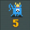, left, right, or vertical |
Killing one disqualifies you from getting the Rat Pacifist achievement
All are revealed by killing the |
|
| 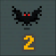 | 2 | 12 | ||
| 3 | 10 | |||
| 4 | 8 | Always exist in pairs, facing each other left, right, up, or down | ||
| 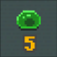 | 5 | 8 | All are revealed by killing the 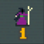 | |
| 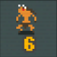 | 6 | 5 | Always exist to the left or right (including diagonal) of a 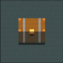, facing the opposite direction, unless the chest is opened. | |
| 7 | 4 | Only 1 exists per quadrant, never directly to the left, right, above, or below the 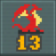 | ||
| 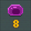 | 8 | 5 | Exist only surrouding the at the edge of the map | All are revealed by killing the |
| 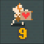 | 9 | 2 | They always mirror their location on the map left or right, facing each other. | Drops a upon death |
| 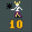 | 10 | 1 | Only exists in one of the 4 corners of the map | All 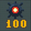 are disarmed and revealed upon death |
| 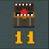 | 11 | 1 | Disguized as a chest | |
| 13 | 1 | Always revealed in the center of the map | Ends the game immediately with a win | |
| 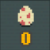 | 0 | 1 | Always exists next to the (including diagonals) | Drops 3 treasure |
| 5 | 1 | Reveals the location of all | ||
| 1 | 1 | Exists only at the very edge of the map and never in a corner, surrounded by | Reveals the location of all and | |
| 3* | 6 | Always in pairs, left, right, above, or below each other, never touching another pair |
Does not deal damage upon revealing, removes only 1 heart at a time, and can never deal lethal damage
Drops 1 treasure |
|
| 0 | 5 | Always exist to the left or right (including diagonal) of a | Drops either 5 treasure or a | |
| 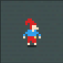 | 0 | 1* | Always exists next to a (including diagonals), but teleports from scroll to scroll when found until there is no empty space to teleport to | Drops 9(?) treasure |
| 0 | 5 | Refill all of your hearts | ||
 |
0 | 1 | Reveals a random unexplored area of the map |